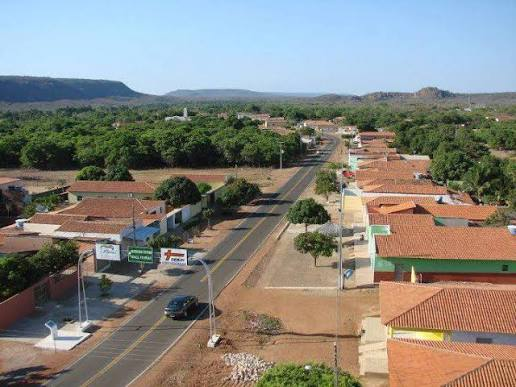
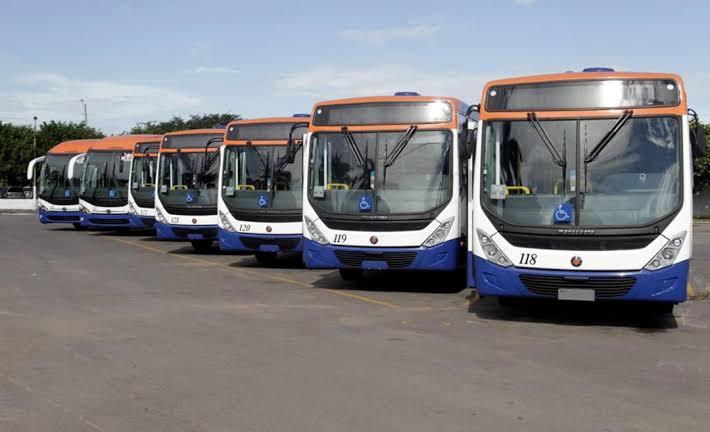
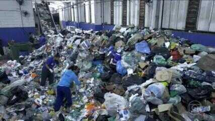

Câmara aprova orçamento de 2027
Os vereadores aprovaram, em votação plenária, a proposta orçamentária para o próximo ano com foco em saúde e infraestrutura.
Ler notícia completaCâmara Municipal de Buriti Grande
Casa do Povo – Legislando com Transparência
Acompanhe as sessões plenárias, conheça os vereadores eleitos e participe ativamente das decisões que constroem o futuro da nossa cidade.

Fique por dentro das principais votações, audiências e projetos aprovados.
Os vereadores aprovaram, em votação plenária, a proposta orçamentária para o próximo ano com foco em saúde e infraestrutura.
Ler notícia completa
A população compareceu para debater melhorias nas linhas de ônibus, novos itinerários e tarifas municipais.
Ler notícia completa
Nova proposta legislativa prevê a ampliação de pontos de coleta seletiva e incentivos fiscais para cooperativas locais.
Ler notícia completaConheça os parlamentares que representam os interesses dos cidadãos de Buriti Grande.
Presidente da Câmara
Mandato: 2025 – 2028
Vice-presidente
Mandato: 2025 – 2028
Primeiro Secretário
Mandato: 2025 – 2028
Vereadora
Mandato: 2025 – 2028
Confira o cronograma de sessões públicas e acompanhe as deliberações em plenário.
| Data | Horário | Tipo | Pauta Principal |
|---|---|---|---|
| 28/09/2026 | 09h00 | Ordinária | Votação do projeto de lei da coleta seletiva e reciclagem |
| 05/10/2026 | 09h00 | Ordinária | Debate das emendas parlamentares para reforma da praça central |
| 12/10/2026 | 14h00 | Solene | Entrega solene de títulos de cidadão honorário de Buriti Grande |
| 19/10/2026 | 09h00 | Ordinária | Apreciação de pareceres e requerimentos das comissões temáticas |
Envie sua dúvida, sugestão ou pedido de informação à Ouvidoria da Câmara.